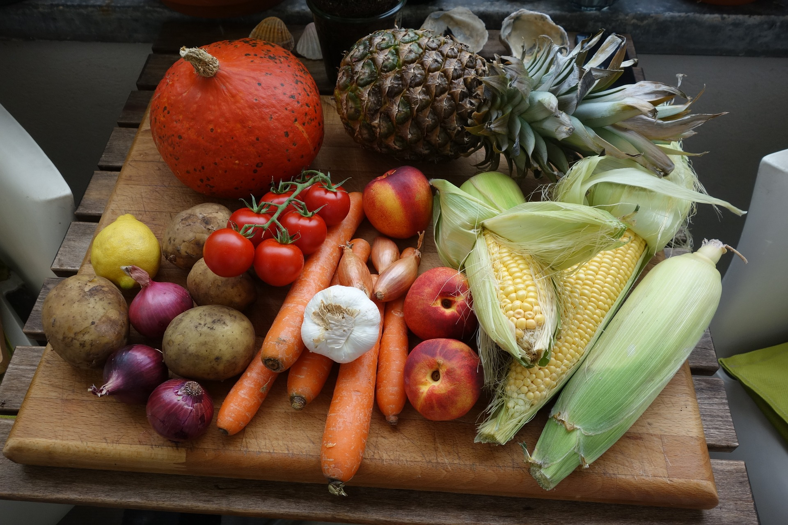
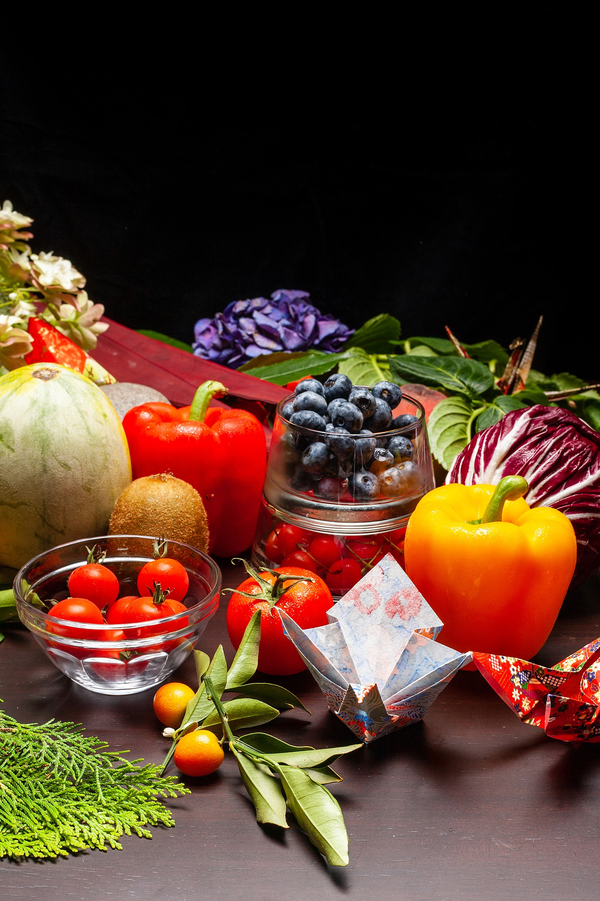
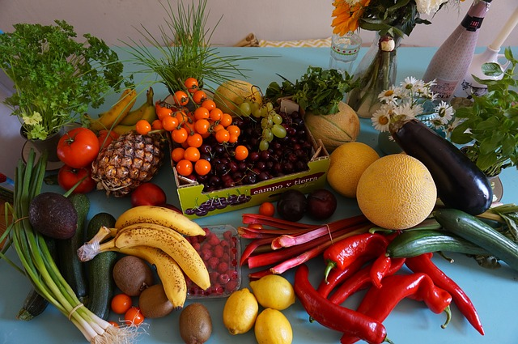

Frutas y Verduras según estación del año en Argentina.
Pequeña guía para aprender a aprovechar las frutas y verduras según estación, ya sea para comer rico como también por economía.
Verano (Enero, Febrero y Marzo).
Frutas:

- Ananá
- Ciruela
- Cereza
- Damasco
- Durazno
- Frutilla
- Higo
- Melón
- Sandía
- Uvas
Verduras:
- Acelga
- Albahaca
- Berenjena
- Calabacines
- Cebolla
- Chauchas
- Choclo
- Espárragos
- Pepinos
- Porotos
- Morrón
- Rabanito
- Tomate
- Zapallitos
Otoño (Abril, Mayo, Junio) e Invierno (Julio, Agosto, Septiembre).

Frutas:
- Banana
- Limón
- Mandarina
- Manzana
- Membrillo
- Naranja
- Palta
- Pomelo
Verduras:
- Aceitunas
- Acelga
- Apio
- Berro
- Brócoli
- Calabaza
- Cebolla de Verdeo
- Coliflor
- Chaucha
- Escarola
- Hinojo
- Nabo
- Puerro
- Rábano
- Radicheta
- Remolacha
- Repollo
- Repollito de Bruselas
- Zanahoria
- Zapallo
Primavera (Octubre, Noviembre, Diciembre).

Frutas:
- Ananá
- Banana
- Frutilla
- Limón
- Manzana
- Naranja
- Palta
Verduras:
- Acelga
- Apio
- Alcaucil
- Arvejas
- Habas
- Lechuga
- Nabo
- Perejil
- Puerro
- Remolacha
- Zapallito
Fuente:https://www.argentina.gob.ar/agricultura/mas-frutas-y-verduras/recomendaciones/las-frutas-y-verduras-de-estacion-son-las-mas-sabrosas-y-nutritivas